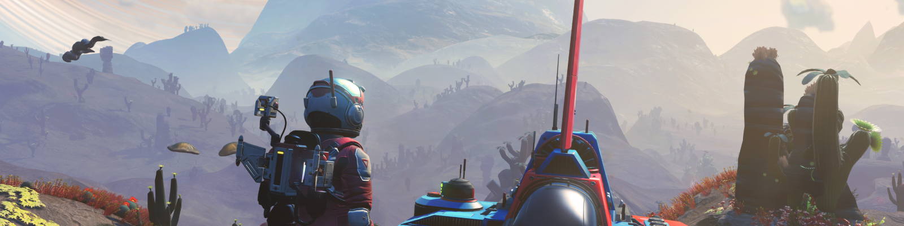

NO MAN`S SKY
In No Man's Sky, players are free to explore an entire, procedurally generated universe that includes around 18 quintillion (264) planets, all with their own unique flora and fauna.When the player starts playing No Man's Sky for the first time, they are placed on a planet on the edge of the galaxy, and from there they are free to go wherever they want. The objective of the game is to reach the center of the galaxy and Sean Murray (programmer) mentioned that it takes about 40 to 120 hours for the player to reach it.